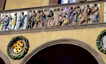
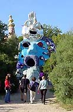
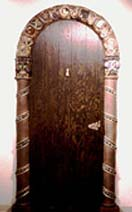
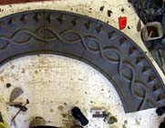

|
Architectural Ceramics Workshop
in Tuscany with Marcia Selsor
May 23- June 6, 2003
Marcia
Selsor will be teaching a workshop on Architectural
Ceramics at La Meridiana,
an international school of ceramics in the Hills of Tuscany. Participants
will meet in Pisa on Friday, May 23, 2003 at the Hotel Royal Victoria.
You will go by train to Certaldo and La Meridiana on Saturday May
24. Pictured on the left is a terra cotta composition by Della Robbia
in the Pistoia. There are many examples of the uses of ceramics
in the architecture of Pisa. The Museo of Santo Mateo has an excellent
collection of historial majolica.
Housing
will be provided in La Meridiana
and nearby villas. Midday gourmet meals will be included for days
spent in the studio. Excursions to Florence, Siena and other Tuscan
towns and sites will occur during the workshop. The cost for the
workshop is US$1900. Airfare is not included. Deposits
are due starting Dec. 1, 2002 until the 14 spaces are full.
Marcia
Selsor is a Professor Emerita at Montana
State University-Billings and has taught numerous workshops
in the U.S.,Italy and Spain. On the right she is demonstrating how
to build a ceramic arch at the 2000 workshop at the Appalachian
Center for Crafts in Tennessee. She is on the technical
staff of Ceramics Monthly.
For more information, contact Marcia at m.selsor@attbi.com
or call 406-259-7244. Credit is available from MSU-B.
More Articles
|